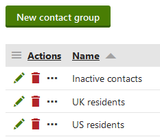
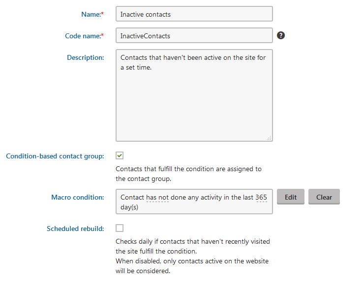

Segmenting contacts into contact groups
You can organize contacts into segments called contact groups. Segmentation allows you to divide your site visitors and users into groups of people with shared characteristics, which you can then accurately target in your on-line marketing efforts (such as Email marketing).
If you have the Kentico CMS license, you can only add contacts to groups manually.
If you have the Kentico EMS license, you can either add contacts to groups manually or set up the system to assign contacts to groups automatically based on conditions. Moreover, you can add accounts to groups.
Contact groups are shared across all websites in the system. Contacts can belong to any number of different contact groups.
Merged contacts in contact groups
When merging contacts, note that only the parent contacts are assigned to contact groups.
You can manage contact groups in the Contact groups application.

Viewing contact groups
Click New contact group to create contact groups.
Manually adding contacts to groups
To add individual contacts to contact groups:
Edit (
 ) a contact group.
) a contact group.Open the Contacts tab.
Click Add contacts.
Select the contacts and click Select.
You can find all contacts in the contact group listed on the Contacts tab.
Adding accounts
In the Kentico EMS edition, you can also add entire contact accounts to groups:
Edit (
) the contact group.Open the Accounts tab.
Click Add accounts.
Select the accounts and click Select.
Adding an account automatically assigns all of the account's contacts into the group. You can find all contacts added via accounts on the group's Contacts tab (identified by the Yes value in the From account column).
Removing contacts from groups
To remove individual contacts from contact groups:
Edit (
) the contact group.Open the Contacts tab.
Click Remove (
 ) next to the given contact.
) next to the given contact.
You can remove multiple contacts using the options below the list:
Choose which contacts to remove:
All contacts
Selected contacts - mark specific contacts using the checkboxes on the left side of the list.
Select the Remove action.
Click OK.
Setting up condition based contact groups
In the Kentico EMS edition, the condition based contact groups automatically gather all contacts that fulfill certain criteria (defined through a macro condition).
Edit (
) the contact group.On the General tab, enable Condition-based contact group.
Specify the condition in the Condition field.
If you write the macro condition manually, the expression must return either true or false.
(Optional) Enable Scheduled rebuild. Ensures that the contact group is automatically rebuilt every day by a scheduled task.

Creating a condition based contact groupClick Save.
You can find all contacts added through the condition on the group's Contacts tab (identified by the Yes value in the Condition-based column).
Using form data in contact group conditions
You can use the information visitors enter into form fields to create contact group conditions.
Improving contact group performance
If you are using custom macro rules, developers can significantly improve contact group performance by implementing a translation for these rules.